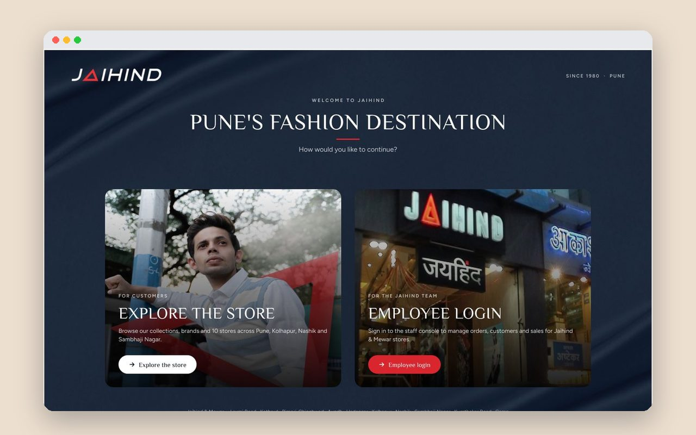
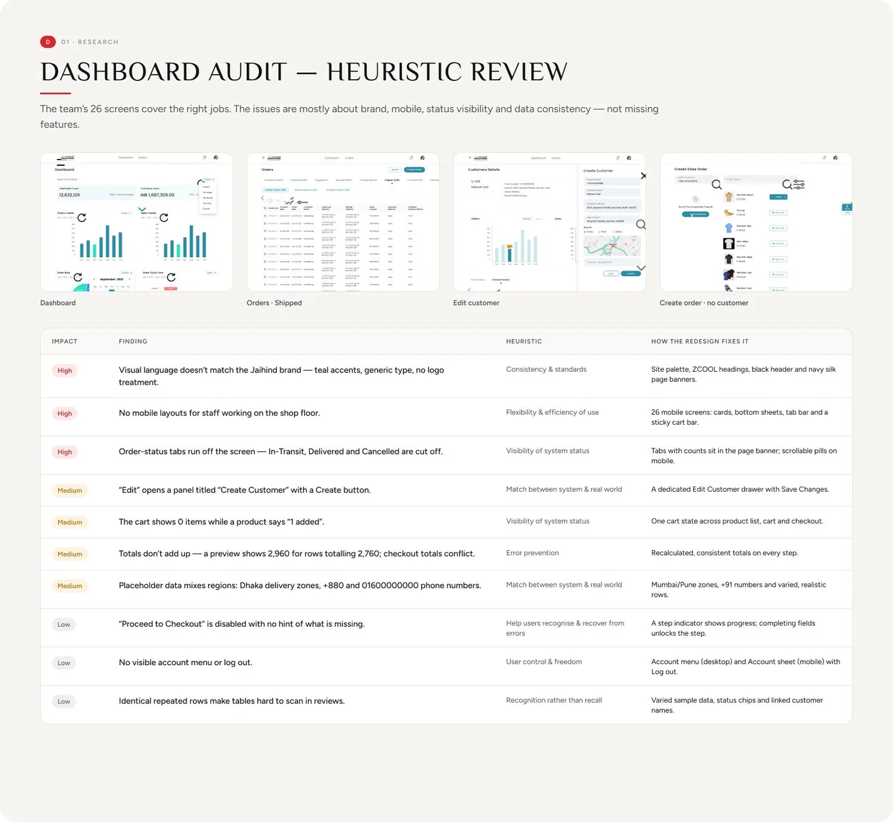
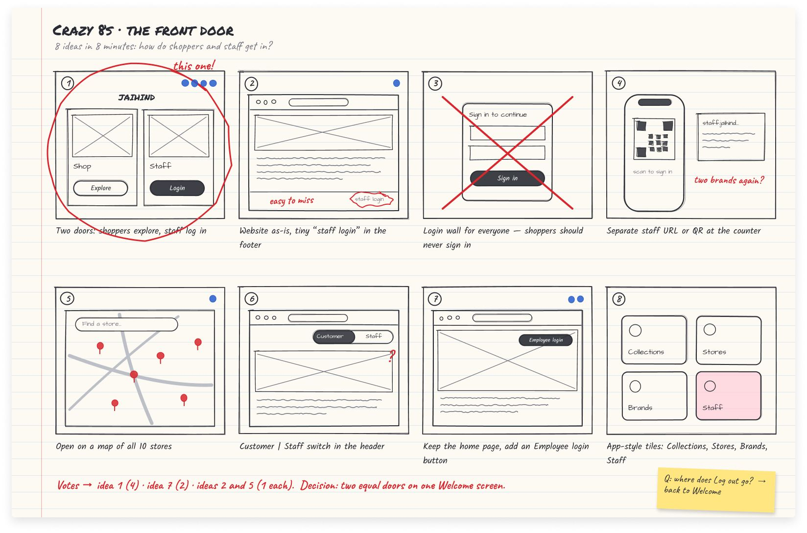
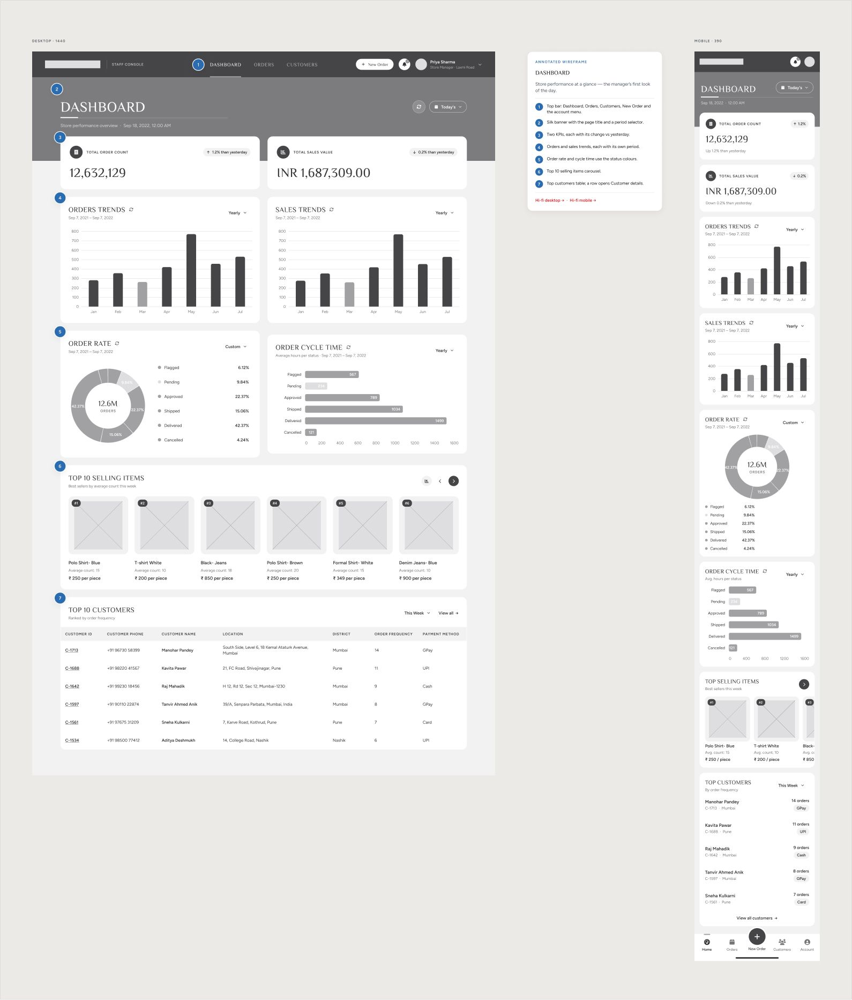

ShippedInternal tools, retail · 6 min read
An order platform that replaced five systems
A menswear chain with 2 brands and 10 stores in Maharashtra, India, where staff typed every order into 5 systems. I designed the internal order platform that replaced them, the component library 3 designers and a PM designed against, and the website where shoppers find a collection or a store.
MeasuredAfter launch, on the order platform
Pain point 1: one order, typed five times
Jai Hind Group has sold menswear in Maharashtra since 1980. It serves two audiences from two sides of the counter.
- Shoppers needed to find a collection or a store, fast.
- Staff typed the same order into 5 systems that didn't talk to each other.
Why it matters: every retype was another chance to get the order wrong. Both halves serve the same orders, so I designed for both.
Shoppers need to
- See what each brand sells
- Find a store near them
Staff need to
- Enter an order once
- See where every order is
Pain point 2: the console did the right jobs, badly
Later, in a self-directed redesign, I audited the live website (21 pages) and the team's dashboard (26 screens) against 10 usability heuristics.
- 3 high: it didn't look like Jai Hind, there were no phone layouts for staff on the shop floor, and the order status tabs ran off the screen.
- 4 medium: the cart showed 0 items while a product said "1 added," totals didn't add up, "Edit" opened a panel called "Create Customer," and sample data came from another region.
- 3 low: a disabled checkout with no hint, no log out, and rows too alike to scan.
Insight: the screens covered the right jobs. The problems were brand, phones, status visibility and data that didn't add up. So I fixed what was broken instead of redesigning for its own sake.

Who I designed for, and where it hurts
Three proto-personas framed the work. They are assumptions to test with real shoppers and staff, not findings.
- Rohan, the occasion shopper. Phone first. Wants to see what's new and find the nearest store.
- Priya, a store manager. Desktop at the counter, phone on the floor. Wants to approve and dispatch fast, and spot problem orders.
- Amit, a floor associate. Phone only. Places an order while the customer waits.
Journey maps showed two peaks: shoppers drop off when they try to work out which store carries a brand, and staff stress peaks on phone orders, with the caller waiting on the line.
Two problem statements, one structure
Problem 1. Shoppers know a brand name, not the company behind it, so they need to find a collection or a store without knowing how the business is organized.
How might we organize the website the way shoppers ask: what do you sell, and where are you?
Problem 2. Staff re-enter the same order in 5 systems, and later fight a console where status, stock and totals are hard to trust.
How might we let staff enter an order once and always see where it is?
- Brands: two brands, one siteShoppers know a name, not the company. One site also means one set of store details to keep right.
- Collections: named the way people shopBy occasion (Casual, Formal, Ethnic, Occasional), by garment (Blazers & Suits, Accessories) and made to measure (Fabrics, Custom Tailoring).
- Stores: every store is a way in"Where are you?" is half of what shoppers ask, so a store is as easy to find as a shirt.
- One front doorEveryone starts on Welcome. Shoppers never see staff navigation, and staff always land on Dashboard.
- One order, four stagesThe cart stays in view through every stage, so nobody loses the order halfway.
- One color per statusThe same color in tabs, tables, dialogs and charts.
The three flows that carry the most weight, each walked step by step. An ✕ or ! marks where the flow breaks today, from the heuristic review and journey maps. A ✓ shows the same step in the redesign.
Flow 1 · Choose a door
BeforeStep by step
- Friction: Search "Jaihind Pune"Results mix store listings, social profiles and the website.
- Friction: Land on a long home pageNo obvious first step. Store links sit far down the page.
- Fails: Staff sign in somewhere elseA separate address that looks nothing like Jai Hind.
Two audiences, no shared way in.
AfterStep by step
- Done: Open jaihindretail.comEveryone starts on Welcome.
- Done: Decision: shopper or staff?Two equal, labeled doors.
- Done: Shopper: Explore the storeCollections and brands, store locations, directions in Google Maps.
- Done: Staff: Employee loginID and password wrong? An inline error, try again. Right? Dashboard.
One front door. Target: 3 taps or fewer to store directions, not yet tested.
Flow 2 · Create a sales order (a phone order)
BeforeStep by step
- Done: Search the customer by phoneA regular calls.
- Fails: "No customer found"A dead end, while the caller waits.
- Friction: Add productsThe cart shows 0 items while a product says "1 added."
- Friction: Proceed to Checkout is disabledNo hint of what is missing.
- Fails: Check the totalsA preview shows 2,960 for rows totalling 2,760.
The caller waits, and the order may be wrong.
AfterStep by step
- Done: Search the customer by phoneSame as before.
- Done: Not found? Add them right thereNo dead end.
- Done: Add products to one live cartThe same count everywhere.
- Done: Follow the 4-step indicatorCompleting fields unlocks the next step.
- Done: Review totals that add upRecalculated on every change. The order lands in Pending.
Order placed with the caller still on the line. Target: under 2 minutes for 3 items, not yet tested.
Flow 3 · Change order status (approve and dispatch)
BeforeStep by step
- Done: Open All OrdersA busy Saturday at the store.
- Friction: Find the right status tabIn-Transit, Delivered and Cancelled are cut off.
- Done: Approve the orderOne click.
- Fails: Stock problem shows upOnly after approving.
- Fails: Mark it In-TransitPreview totals don't add up, and nothing confirms the change.
Problems surface after the decision, not before.
AfterStep by step
- Done: Open All OrdersSame as before.
- Done: See every status tab, with countsScrollable pills on a phone.
- Done: Approve, with a stock checkShort on stock? Approve and create a sub-order.
- Done: Assign a delivery partnerThen a preview with correct totals.
- Done: ConfirmA toast confirms it, and tabs and counts refresh.
Problems show up before the decision. Works for one order or many.
Eight ideas in eight minutes, and what I picked
I sketched 8 ideas in 8 minutes for how shoppers and staff should get in, then sketched every key screen before opening Figma.
- Picked: two equal doors on one welcome screen.
- Dropped: a login wall, since shoppers shouldn't need an account to browse.
- Dropped: a staff link hidden in the footer.
Why: paper is cheap to throw away, so I could compare eight ways in before committing to one.

Get the layout right in gray first
Gray boxes only, desktop and phone side by side, with numbered notes for each decision.
- The sales order became 4 clear stages, with the cart always in view.
- Every screen got a phone layout, for staff on the shop floor.
Why: gray wireframes keep the conversation on layout and flow, not color.

Seven changes, and the principle behind each
Change 1 shipped and was measured. Changes 2 to 7 are my self-directed redesign: I pulled Jai Hind's colors, fonts and photos into a small design system (37 colors, 17 text styles, 13 components, 10 status colors), redesigned all 26 screens for desktop and phone, and linked 118 screens with 2,104 interactions in Figma.
ShippedThe order platform. Change 1 · Staff · ShippedEnter the order once
One platform, shared by 3 business functions, replaced 5 disconnected systems. I turned what those functions needed into 30+ documented requirements and user flows. An order is entered once and moves through every status in one place. I also made the templates and component library that 3 designers and a PM designed against, and worked with the developers through implementation so the design carried into production.
UX principles
- Error prevention. If nobody retypes an order, nobody can retype it wrong.
- Visibility of system status. Every order's status lives in one place.
Measured27% fewer user errors and 40% more efficient workflows after launch.
AfterOne welcome screen, two doors. Change 2 · BothOne front door for both
The staff tools lived at a separate address and looked nothing like the brand. Now both doors sit behind one welcome screen: "Explore the store" for shoppers, "Employee login" for staff.
UX principles
- Recognition over recall. Two labeled doors, no need to remember a separate address.
- User control and freedom. Shoppers browse without an account. Log out returns staff to Welcome.
Before: Generic teal After: Jai Hind's look Change 3 · StaffBorrow the brand, don't invent one
Shoppers saw the brand; staff saw generic teal at a desk. The console now uses the website's palette, fonts, a black header and navy silk banners.
UX principles
- Consistency and standards. The same company on both sides of the counter.
- Aesthetic and minimalist design. A small system: every fill bound to one of 37 color variables.
- Change 4 · Staff
Every screen works on a phone
The console was desktop only, but Priya walks the floor and Amit only has his phone. All 26 screens got a phone layout: cards, bottom sheets, a tab bar and a sticky cart bar.
UX principles
- Flexibility and efficiency of use. The same job, wherever staff are standing.
- Fitts's law. A bottom tab bar and sticky cart bar, within thumb reach.
- Change 5 · Staff
Every order status in view
Status tabs ran off the screen. Now all tabs sit in the page banner, each with a count, and become scrollable pills on a phone. Each status keeps one color everywhere.
UX principles
- Visibility of system status. Counts show where work is piling up.
- Consistency and standards. One color per status in tabs, tables, dialogs and charts.
- Change 6 · Staff
Check stock before approving
Stock problems used to surface only after approving. Now Approve runs an inventory check first. If an item is short, staff see it before the order moves, and can split it into a sub-order.
UX principles
- Error prevention. The problem shows up before the decision, not after.
- Change 7 · Staff
Phone orders without dead ends
"No customer found" was a dead end while the caller waited. Now staff add the customer right there. One live cart keeps the same count everywhere, a 4-step indicator shows progress, and totals add up on every change.
UX principles
- Help users recover from errors. Not found leads to Add customer, not a stop.
- Visibility of system status. One cart state and a step indicator.
- Error prevention. Totals recalculated on every step.
Not yet testedA clickable prototype, not yet tested with staff.
What's proven, and how I'd test the rest
The order platform was measured after launch. The website numbers are scope, not results: I never measured its traffic. The redesign is untested, so these are targets:
- Under 2 minutes to take a phone order with three items
- 90% of managers spot flagged orders on the first click
- 3 taps or fewer from Welcome to store directions
- 0 wrong orders when updating five at once
Test plan: moderated sessions with 5 to 6 store staff (managers, billing, floor associates) and 5 shoppers.
- 27%fewer user errors, measured
- 40%more efficient workflows, measured
- 5 → 1systems, replaced by one platform
- 2 · 8 · 10brands, collections and stores, shipped
Follow the question
Shoppers ask what you sell and where you are. Staff ask where an order is. Nobody asks which system holds it.
Say it once
Five copies of one order meant five chances to get it wrong. Collections need the same rule: one name, everywhere.
It's one company
Shoppers saw the brand; staff didn't. A business should feel like itself on both sides of the counter.
What I'd do differently now
Ideas for a next version, not built yet.
A store helper for shoppers
Ask "which store has this blazer in my size?" and get an answer from live stock, with directions.
Orders from a photo or a voice note
Staff snap a handwritten order or read it out, and AI fills in the form for them to check. Less typing, fewer mistakes.
Did you like this case study?
Tell me what worked, or what you'd change. It comes straight to me.